ZOLKO INTEGRATIONS
Primero entendemos. Después integramos.
Inteligencia artificial que se adapta a tu negocio, no al revés. La integramos para que vendas más.
Tu torre
Tu negocio, piso por piso.
Cada piso es algo que hacemos por ti. Súbete y míralo funcionando.
Cimientos
Primero entendemos tu negocio.
Un diagnóstico de 30 minutos: cómo vendes hoy y dónde se te van los clientes.
Piso 1 · Tu página
Que te encuentren y te escriban.
Estos son ejemplos. Hacemos la página de tu negocio, sea cual sea, y lleva al cliente directo a tu WhatsApp.
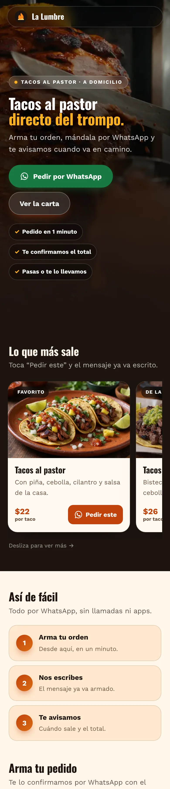
EjemploTaquería
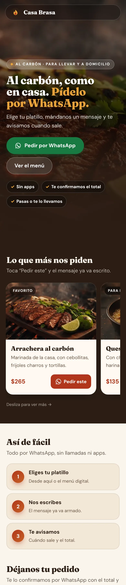
EjemploRestaurante
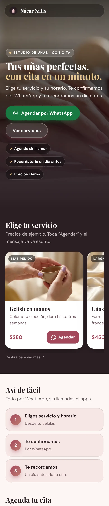
EjemploEstudio de uñas
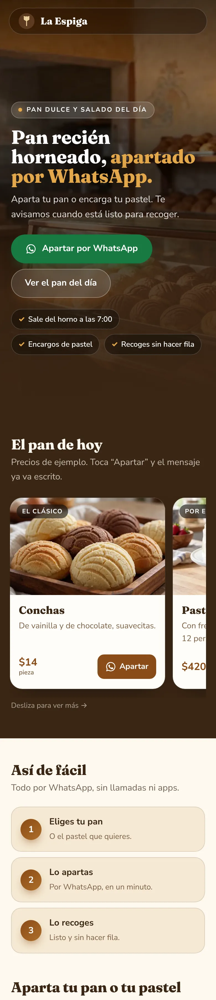
EjemploPanadería
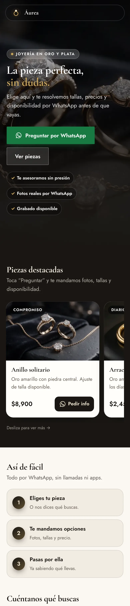
EjemploJoyería
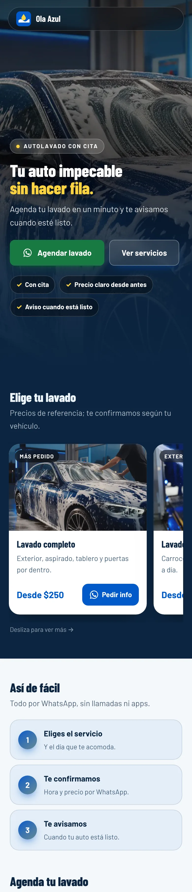
EjemploCar wash
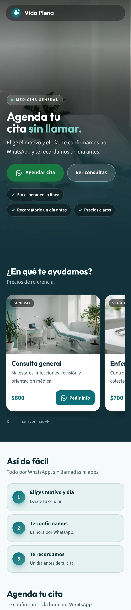
EjemploConsultorio
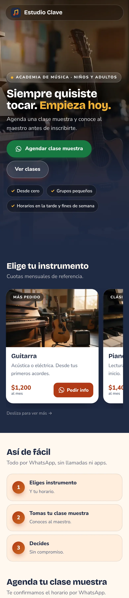
EjemploAcademia de música
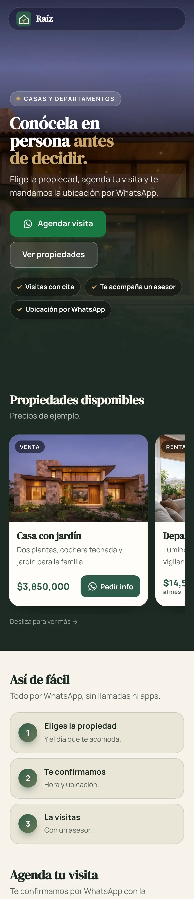
EjemploInmobiliaria
Desliza y toca un celular para ver la página completa
Piso 2 · Tu contenido
Publicaciones que hacen que te escriban.
Cada publicación responde lo que tus clientes ya preguntan y termina invitando a escribirte.
- ¿Nunca has tocado un instrumento?Cierra con: «Escríbenos»
- Encuesta: ¿qué te gustaría aprender?Cierra con: «Responde y te contamos»
- Mitos de aprender música de adultoCierra con: «Agenda tu clase muestra»
Piso 3 · Tu WhatsApp
Sin respuesta, se van. Con ZOLKO, compran.
Piso 4 · Tu ARM
El CRM ya no existe. Ahora es el ARM.
Tu base de clientes con seguimiento automático: confirmaciones, recordatorios y recompras salen solas, y cada cliente pasa de etapa hasta quedar listo para comprar.
ARM · Tus clientes Ejemplo
- NuevoEscribió hoy
- InteresadoPidió precio
- CotizadoSeguimiento solo
- Listo para comprarTe avisa a ti
Piso 5 · Tu local
Del mostrador a Google.
Menú por QR, NFC para dejar reseña y tarjetas para tu equipo. Más reseñas hacen que Google Maps y la IA te recomienden.
También en tu local: Menú digital por QR · Tarjeta NFC
✦ ¿Dónde hay buenos tacos cerca de mí?
Taquería La Lumbre Ejemplo
★★★★★ Reseñas en Google · Abierto ahora
📍 Cómo llegarPedir por WhatsApp
Piso 6 · Que regresen
Clientes que vuelven solos.
Tarjeta de lealtad en el celular de tu cliente: suma sellos y le recuerda volver.
Casa Brasa Tarjeta de lealtad · Ejemplo
Al juntar 8: tu recompensa
Piso 7 · Tu equipo
Tú y tu equipo, usando la IA.
Talleres prácticos para contestar, cotizar y vender mejor con inteligencia artificial.
- 01Contestar rápido y bien
- 02IA en el día a día
- 03Seguimiento con el ARM
Azotea · Próximamente
Checador digital: la nueva ley ya viene.
Desde 2027, los negocios deberán registrar de forma electrónica las entradas, salidas y horas extra de su equipo. ¿El tuyo ya está listo?
Reforma a la Ley Federal del Trabajo publicada en el Diario Oficial el 1 de mayo de 2026. La STPS publicará las reglas del registro.
El fundador de esta torre
Ricardo Vergara. Así lo hacemos.
Fundador de ZOLKO INTEGRATIONS. IA, automatización y estrategia comercial para que tu negocio venda más.
- +8años en ventas
- 4años en franquicias
- 1Hago tu diagnóstico y entiendo cómo vendes hoy.
- 2Integro tu página, tu WhatsApp con IA y tu ARM.
- 3Te enseño a ti y a tu equipo a usarlos.
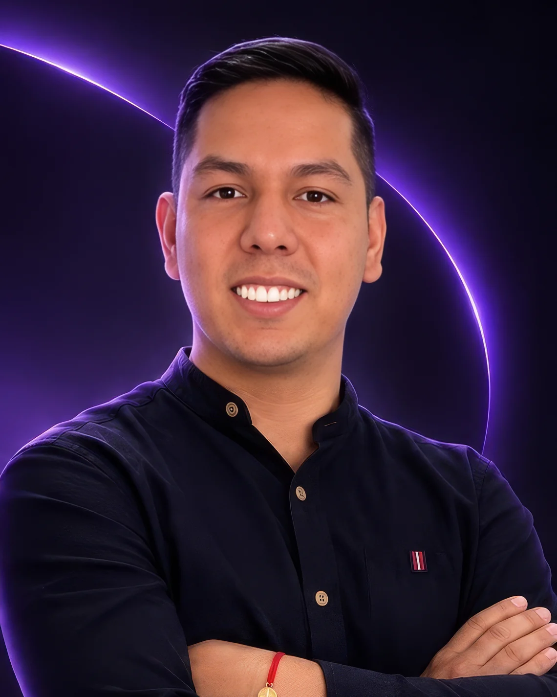
Nuestras referencias
Negocios que ya confiaron en Ricardo y en ZOLKO.
Tu siguiente paso
¿Subimos tu negocio?
Los precios los ves directo con Ricardo. Mándale la palabra DIAGNÓSTICO y empezamos por entender tu negocio.